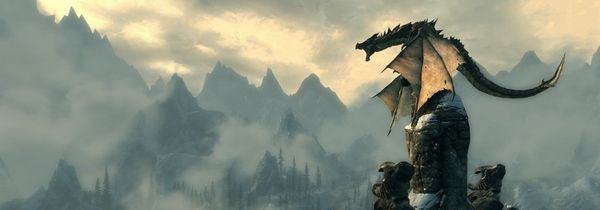

Here are some of my favourite game series.
These choices are personal to me and just my opinion.
Not in any order.
Legend of Zelda!
Zelda is an all time classic from Nintendo, although the games are named Zelda
you play as the character Link, the Legend of Zelda, was originaly released in
Japan back in 1986, just over a year later it was released for the NES
The Legend of Zelda
Original release
The games designer
has become a legend in the gaming industry
Grand Theft Auto!
Wicked!
This is how Grand Theft Auto looked back in 1997 when first released.
Leap forward 16 years to 2013 and the release of Grand Theft Auto 5.
The Grand Theft Auto series was created by Rockstar and has
developed from a top down action adventure game, to it's current
form of a massive open 3D world, with online capabilities where
the player can get lost for hours exploring.
The Elder Scrolls!
The Elder Scrolls series began back in 1994 with the release of The Elder Scrolls: Arena.
This was our first expedition in the world of Tamriel.
The Elder Scrolls is an open world RPG created by Bethesda
The world of Tamriel has become immense with several games
taking place within the universe, varying from the Iliac Bay
in Daggerfall to the cold northern dragon filled region of Skyrim.
Fallout!
The Fallout series is set in a post apocalyptic universe,
filled with radioactive mutated creatures and communities
of people fighting to survive within the wasteland.
The series began in 1997 with the release of Fallout
Fallout heavy focus on storytelling while having branching
arcs and side missions has made it a fan favourite
 Advancements
Advancements
in powerful gaming systems and ground breaking graphic,
along with creative direction from Todd Howard
has has a hugh impact on the games playability.